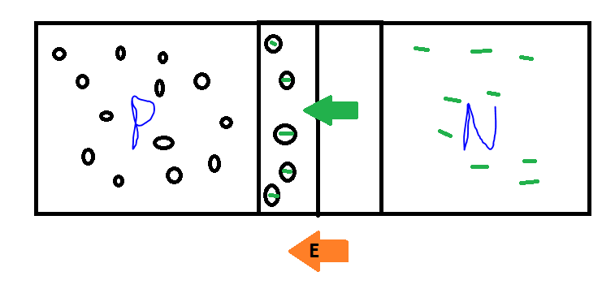
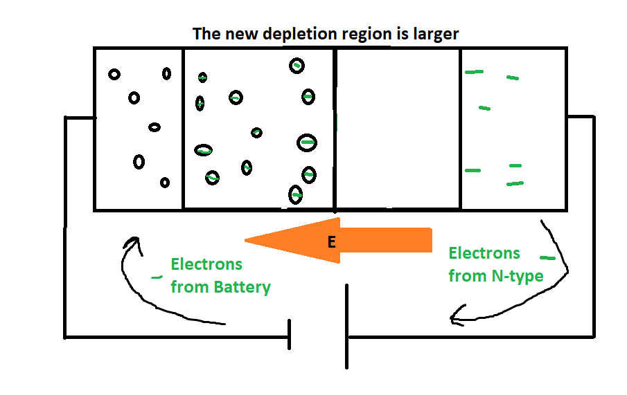
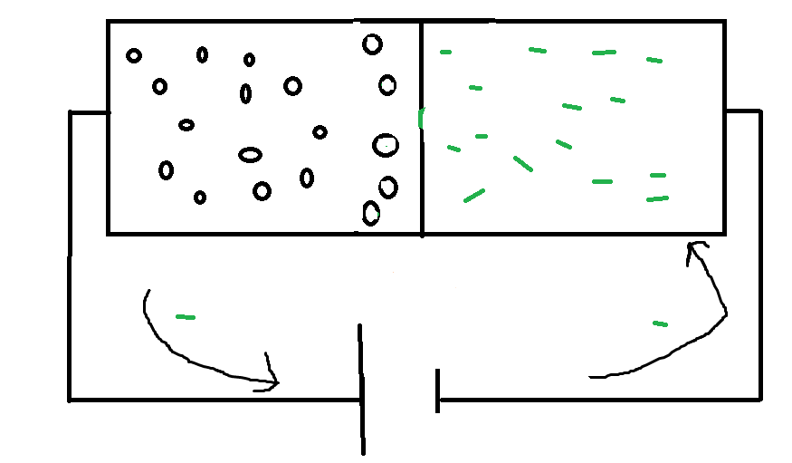
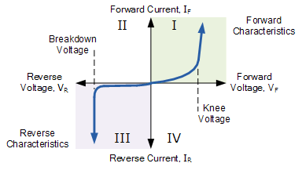

Up
Electronics
Background Idea: PN junctions
Pure Silicon is a poor conductor since every electron is used in the formation of covalent bonds. However, it can be turned into a great conductor by "doping" it with other elements. PN junctions rely on the properties of two doped semiconductors: P type and N type. P typed semiconductors are a silicon matrix where some Si atoms are replaced with Boron(or another group 13 element). Boron only has three valence electrons, so this creates an excess hole in the material.
Excess holes can move through the silicon matrix, allowing them to conduct electricity. N-type semiconductors are doped with phosphorous (or another group 15 element). Now, the excess charge carrier is an electron, and the material is conductive. It is also important to be aware that minority carriers of the other type exist(ie electrons in P-type). I'll focus on the behavior caused by the dominant, majority charge carriers.
When a P-type and N-type material are interfaced together, the resulting PN junction has useful properties. Free electrons from the N-type material will drift to the P-type material, filling some of the excess holes in the P-type material:

This drift creates an electric field E. In this configuration, current can no longer flow (there is no excess charge carrier in the middle "depletion" region). We can overcome this depletion region using a battery. Looking at the two possible configurations:

Attaching the positive terminal to N-type and vice versa, we get the above configuration. Here, electrons from the battery will enter the P-type material, filling more holes and decreasing the amount of charge carriers. Additionally, electrons from the N-type flow to the battery, decreasing charge carriers. As both the P and N-type materials lose charge carriers, the depletion region grows. The lack of charge carriers in this region prevents the flow of current. This configuration is reverse biased.

If the battery is hooked up in the opposite configuration, something interesting happens. The battery removes electrons from the P-Type material, increasing the number of holes. Some of these holes will migrate into the depletion region. In the N-type material, the battery adds more electrons, some of which will migrate into the depletion region. If the battery is sufficiently large (V>0.7 for Si), the depletion region will be completely filled by charge carriers, and current can now flow! This configuration is forward biased.
Diode behavior
The IV curve for a diode is shown below:

In the forward biased configuration, current flows freely after the "knee voltage" (0.7 for silicon). In the reverse configuration, there is a small leakage current caused by minority charge carriers, but no significant current flows until full diode breakdown, in which case the diode shorts.